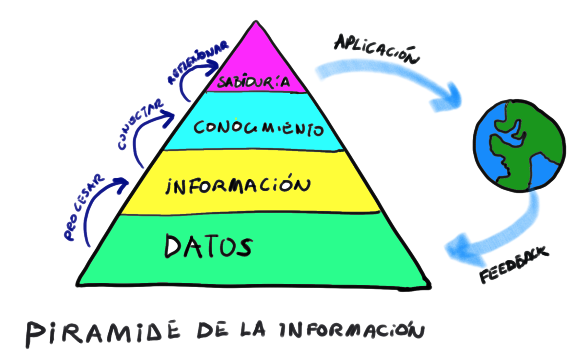
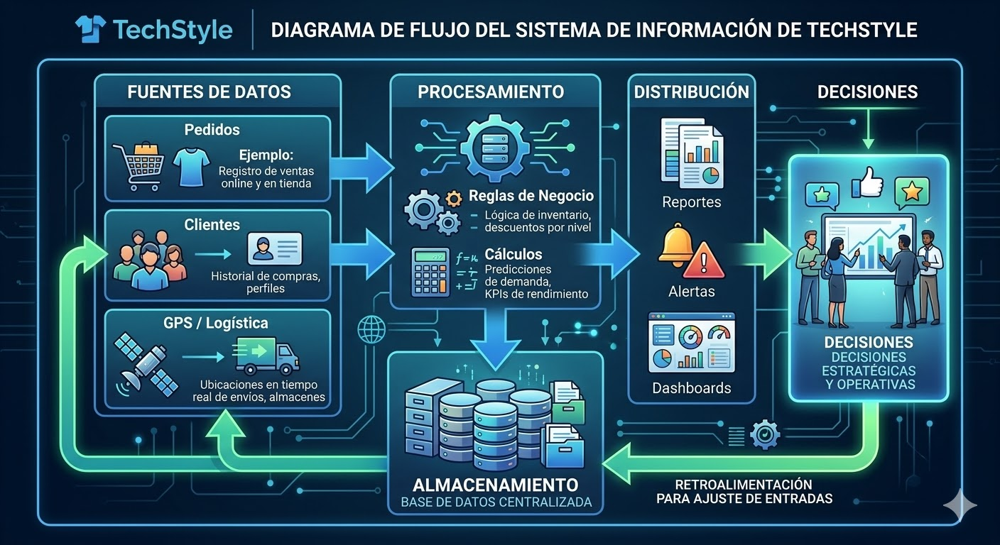
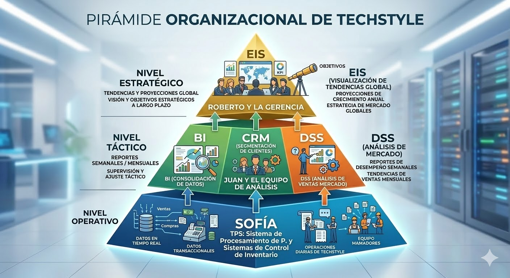

Sistemas de Información en el Contexto Empresarial
Semana 1 · W01 · Unidad 1 · Big Data y Analytics
2026-03-01
Bienvenidos
Big Data y Analytics · ICOM E015
Unidad 1: Sistemas de Información en el Contexto Empresarial
Situación Real: Lunes 9:00 AM
Reunión de Gerencia – TechStyle
María González, Gerente de Marketing de TechStyle (tienda online de retail), debe presentar su propuesta para la campaña del próximo mes.
Presupuesto: $15.000.000 CLP
Pregunta: ¿En qué categoría de productos invertir para maximizar las ventas?
¿Con qué cuenta María?
- Un archivo Excel con 450.000 filas de órdenes de venta.
- Datos en bruto: fecha, producto, categoría, precio, región, cliente.
- Sin análisis previo. Solo datos crudos.
Pregunta disparadora: ¿Qué diferencia hay entre tener datos y tener información?
La Jerarquía del Valor del Dato

Los Sistemas de Información automatizan este recorrido.
Aplicación: La Jerarquía en TechStyle
Desde las 450.000 filas de María hasta la decisión de inversión:
- Dato: fila en el CSV →
{fecha: 2026-03-10, producto: "Zapatillas Runner", precio: 45000, región: RM} - Proceso: filtrar por mes, agrupar por categoría, sumar montos → tabla dinámica en Excel
- Información: “Calzado generó $8,1M en ventas totales en Q1, liderando todas las categorías”
- Conocimiento: “Calzado crece sostenidamente en Q1 los últimos 3 años. El patrón se mantiene.”
- Decisión: María propone invertir $9M del presupuesto de $15M en campaña de Calzado para Q2
La Jerarquía del Dato: Visualización
La pirámide muestra que los datos son abundantes pero solo una fracción se convierte en decisiones valiosas. El trabajo del analista es reducir esa pirámide eficientemente.
Verificación: ¿Dato, Información o Conocimiento?
Clasifica cada enunciado:
{id_cliente: 442, región: "Valparaíso", monto: 32.000}→ ¿Dato?- “Las ventas de Calzado cayeron 15% en julio 2026 respecto a julio 2025” → ¿Información?
- “Cada vez que TechStyle hace descuentos en Ropa, las devoluciones aumentan 20%” → ¿Conocimiento?
- “Lanzar la campaña de descuentos solo en Accesorios, no en Ropa” → ¿Decisión?
Respuestas: 1-Dato · 2-Información · 3-Conocimiento · 4-Decisión
¿Qué es un Sistema de Información?
Un Sistema de Información (SI) es un conjunto interrelacionado de componentes que recopilan, procesan, almacenan y distribuyen información para apoyar la toma de decisiones y el control en una organización.
No es solo software. Un SI tiene 5 componentes.
El SI como Sistema: Entradas, Procesos y Salidas
El modelo IPO (Input → Process → Output) aplicado a TechStyle:
| Fase | Ejemplo en TechStyle |
|---|---|
| Entrada | Registro del pedido #8821 por la aplicación móvil |
| Proceso | Validar stock, calcular total, asignar repartidor |
| Salida | Confirmación al cliente + tarea asignada a Sofía |
| Retroalimentación | Sofía marca “entregado” → actualiza KPI de tiempo de entrega |
Sin este ciclo completo, el sistema recibe datos pero no genera valor para la decisión.
Diagrama de Flujo de un SI

El ciclo continuo: las decisiones generan nuevas operaciones que generan nuevos datos que alimentan nuevas decisiones.
Los 5 Componentes de un SI
| Componente | Descripción | Ejemplo TechStyle |
|---|---|---|
| Hardware | Dispositivos físicos | Servidores, POS, tablets de repartidores |
| Software | Aplicaciones y SO | Plataforma e-commerce, ERP |
| Datos | Hechos almacenados | techstyle_orders.csv |
| Personas | Usuarios y desarrolladores | María, Juan, Sofía |
| Procesos | Procedimientos y reglas | Flujo de aprobación de pedidos |
Aplicación: Los 5 Componentes en el Sistema de Pedidos
Cuando Ana realiza un pedido en la app de TechStyle:
- Hardware: servidor de TechStyle en la nube + smartphone de Ana
- Software: app móvil TechStyle + motor de base de datos MySQL
- Datos: registro del pedido, stock actualizado, historial de compra de Ana
- Personas: Ana (cliente), Sofía (repartidora), equipo de TI (mantiene el sistema)
- Procesos: flujo de compra → validación de pago → asignación de repartidor → confirmación de entrega
Verificación: ¿Qué Componente Falló?
Escenario: La tablet de Sofía (repartidora) se quedó sin batería y no pudo marcar el pedido como “entregado”. El cliente reclamó y el KPI de tiempo de entrega quedó sin actualizar.
¿Qué componente del SI falló?
Software— la app funcionaba correctamente- Hardware — la tablet se apagó
Datos— los datos existían pero no pudieron registrarsePersonas— Sofía hizo su trabajoProcesos— el proceso estaba definido
Conclusión: Un fallo en cualquier componente compromete todo el SI.
Actividad: Identifica los Componentes
En parejas – 5 minutos:
Piensen en el sistema que usa su banco para mostrarles su saldo en la app.
- ¿Cuál es el hardware involucrado?
- ¿Qué software usan ellos y tú?
- ¿Qué datos procesa el sistema?
- ¿Quiénes son las personas del sistema?
- ¿Qué proceso ocurre cuando transfieres dinero?
Actores y Niveles Organizacionales en TechStyle
- Nivel Operativo: Repartidora Sofía — registra entrega de pedido a pedido.
- Nivel Táctico: Analista Juan — genera reportes semanales de ventas por zona.
- Nivel Estratégico: CEO Roberto — decide si expandir TechStyle a nuevas ciudades.
Cada nivel necesita información diferente del mismo dato.
La Pirámide Organizacional de TechStyle

Cuantos más arriba en la pirámide, mayor el nivel de abstracción de la información y más largo el horizonte de tiempo de las decisiones.
Decisiones según el Nivel: Detalles
| Actor | Nivel | Horizonte | Tipo de Decisión |
|---|---|---|---|
| Sofía | Operativo | Hoy | ¿Cuál es la ruta de entregas de esta mañana? |
| Juan | Táctico | Esta semana / mes | ¿Qué categoría está bajo la meta de ventas? |
| María | Táctico | Este mes / trimestre | ¿Dónde invertir los $15M de campaña? |
| Roberto | Estratégico | Este año / 3 años | ¿Expandir TechStyle a Concepción en 2027? |
Verificación: ¿A Qué Nivel Pertenece?
Clasifica cada necesidad de información:
- “¿Cuántos pedidos debo entregar hoy en Las Condes?” → Operativo
- “¿Cuál fue el tiempo promedio de entrega por zona en el último trimestre?” → Táctico
- “¿Debería TechStyle expandirse a Perú en 2028?” → Estratégico
- “¿El pedido #9045 fue marcado como entregado?” → Operativo
- “¿En qué regiones está cayendo el NPS este mes?” → Táctico
El Mismo Dato, Tres Perspectivas
Dato origen: “Pedido #8821 — Zapatillas — $45.000 — Las Condes — 2026-03-10”
| Actor | Lo que necesita ver |
|---|---|
| Sofía (operativo) | ¿El pedido está asignado a mi ruta de hoy? |
| Juan (táctico) | ¿Cuántos pedidos de Calzado procesamos esta semana en RM? |
| Roberto (estratégico) | ¿Está creciendo TechStyle en las comunas de mayor poder adquisitivo? |
Del Dato a la Acción: Flujo Completo
Trazando el pedido #8821 a través de los tres niveles:
- Dato registrado: Sofía confirma entrega en su tablet →
estado: entregado, fecha: 2026-03-10 - Informe táctico: Juan agrega 1.247 pedidos más → “Calzado: 312 pedidos entregados esta semana, $14,1M”
- KPI estratégico: Roberto ve en su EIS → “Calzado creció 22% vs. semana anterior en toda la RM”
- Decisión: Roberto aprueba la campaña de $9M en Calzado para Q2
Sin el dato de Sofía bien registrado → toda la cadena falla.
De Vuelta con María
María necesita tomar una decisión hoy.
- Tiene los datos en
techstyle_orders.csv. - Necesita convertirlos en información útil.
- Tiene experiencia con Excel y tablas dinámicas.
En el laboratorio de hoy: harás exactamente eso: de dato crudo a recomendación ejecutiva en 30 minutos.
Herramientas que ya Conocen
El camino que ya han recorrido:
- Excel → tablas dinámicas para convertir filas en resúmenes
- Power Pivot → cruzar múltiples tablas de datos para análisis más ricos
- Power BI → visualizar KPIs en dashboards para la toma de decisiones
Este semestre aprenderán el siguiente nivel: diseñar y construir la base de datos que alimenta todo eso.
Sin una buena base de datos → Power BI muestra datos incorrectos → las decisiones son incorrectas.
¿Cuándo Falla el SI?
Cuatro escenarios reales en TechStyle:
- Falla de hardware: Los servidores caen a medianoche del Black Friday → 0 pedidos procesados durante 3 horas → pérdida directa de $4M.
- Falla de datos: 12% de clientes sin región registrada → reportes de zona incompletos → campaña regional mal dirigida.
- Falla de personas: Sofía registra “entregado” antes de entregar → KPI de tiempo de entrega artificialmente bueno → bonos incorrectos.
- Falla de procesos: No existe un proceso de validación de duplicados → el mismo producto se descuenta del stock dos veces.
Los SI en el Ecosistema Digital Actual
Tendencias que transforman los SI empresariales:
- Cloud computing: los servidores ya no son físicos en la empresa → menor costo, mayor escalabilidad
- APIs y microservicios: TechStyle conecta su SI con Transbank, Starken y Google Maps
- Mobile first: la tablet de Sofía es parte integral del SI, no un complemento
- Big Data y Analytics: el volumen de datos crece tan rápido que los SI clásicos ya no son suficientes → próximas semanas
Objetivo de Aprendizaje – Semana 1
RA: Explica los distintos sistemas de información en el contexto de la toma de decisiones en una organización.
- Distinguir dato, información y conocimiento.
- Identificar los 5 componentes de un SI en un caso real.
- Reconocer los 3 niveles organizacionales y qué información necesita cada uno.
Puntos Clave
- Los datos por sí solos no son útiles: el valor surge del procesamiento → información → conocimiento → decisión.
- Un SI tiene 5 componentes interdependientes: si falla uno, falla el sistema completo.
- Los 3 niveles organizacionales necesitan información con diferente granularidad y horizonte temporal.
- TechStyle es nuestro caso de estudio: cada concepto del semestre se aplicará a este negocio real.
- El objetivo del curso es construir los SI que permiten a Roberto, María y Juan tomar mejores decisiones con datos.
Preview del Laboratorio W01
Lab W01: “De Dato Crudo a Decisión”
- Abrir
techstyle_orders.csven Excel (450.000 filas de pedidos reales de TechStyle). - Clasificar 10 columnas del dataset como dato, información o conocimiento.
- Identificar los 5 componentes del SI en el sistema de pedidos de TechStyle.
- Construir una tabla dinámica que responda la pregunta de María: ¿en qué categoría invertir los $15M?
- Redactar una recomendación ejecutiva de 3 oraciones basada en los datos.
Reflexión Final
“Antes del SI, la gerente tomaba decisiones basadas en intuición. Con el SI, toma decisiones basadas en evidencia.”
Próxima semana: ¿Qué tipos de SI existen? ¿Cuál es el adecuado para cada nivel y decisión?

Big Data y Analytics · USS · 2026